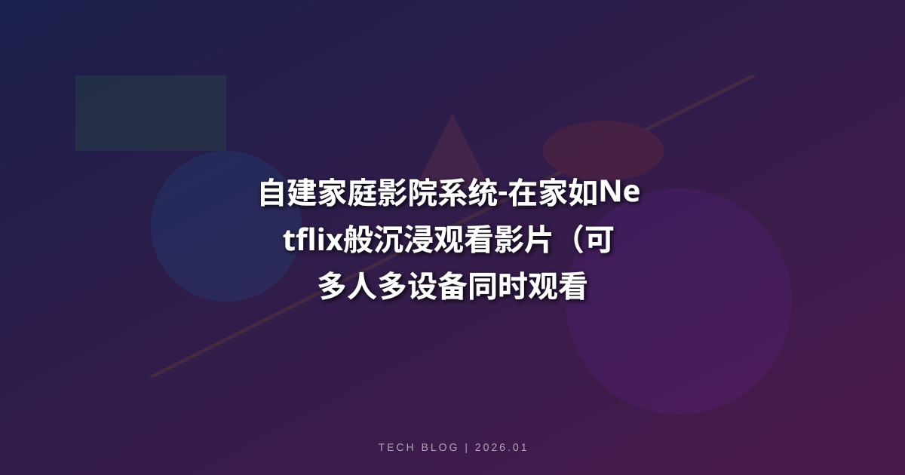
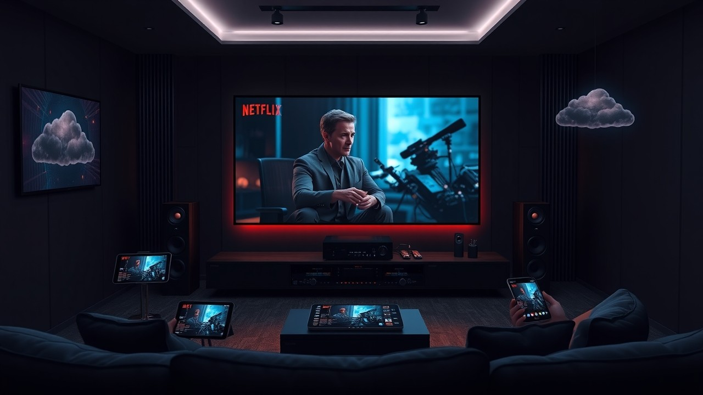
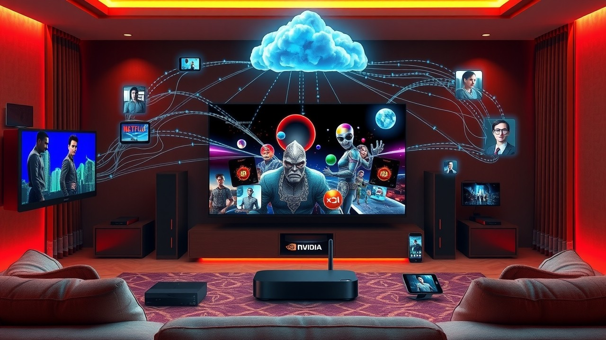

近年来，自建家庭影院系统在中国市场迅速崛起，成为消费者追求沉浸式观影体验的新宠。随着技术的进步和市场需求的变化，多个厂商纷纷涌入这一领域，而Jellyfin作为私建家庭影院的代表性方案，以无广告干扰、多设备适配、操作简便等核心优势，不仅满足了大众对高品质视听的追求，更成为孝敬老人的实用选择。本文将结合Jellyfin系统的具体应用，深度剖析这一趋势背后的经济周期、政策导向，预测其对未来3-5年的产业链影响，并提供详细的系统搭建教程，助力用户轻松实现“在家如Netflix般”的沉浸观影体验。
自建家庭影院系统 - 在家如Netflix般沉浸观看影片
导语 (核心摘要)
近年来，随着网络视频平台的普及和消费者观看习惯的变化，自建家庭影院系统在中国市场迅速崛起，成为消费者追求沉浸式观影体验的新宠。其中，Jellyfin作为一款私有自建的家庭影院系统，凭借与Netflix同源的沉浸式观影效果、无广告干扰、多设备同步观看等特点，迅速获得市场青睐。根据最新的市场调研数据，家庭影院市场在过去两年内增长了超过30%，而私建类系统因兼具隐私性与灵活性，增速更是超过整体市场均值。这一现象不仅反映了消费者对高品质视听体验的追求，也凸显了“适老化”“个性化”消费需求的崛起。本文将结合Jellyfin的技术特性与实操教程，深度剖析行业趋势背后的经济周期、政策导向，预测其对未来3-5年的产业链影响，并解答用户核心疑问，为家庭影院搭建提供全面参考。
导火索 (为什么是现在？)
自2020年新冠疫情以来，居家隔离和在线娱乐需求激增，推动了家庭影院系统的需求爆发。与此同时，互联网巨头如阿里巴巴、腾讯等加大对家庭娱乐设备的布局，形成良好市场氛围；而技术进步使家庭影院系统成本逐渐降低，让更多家庭能够负担高品质观影设备。在此背景下，Jellyfin这类私建系统应运而生——它无需依赖第三方平台，可自主管理影片资源，且无广告、操作简便的特性，精准击中了消费者对“纯净观影”和“适老化使用”的核心需求，尤其成为孝敬老人的优选方案，进一步加速了家庭影院的普及。
底层机制/技术拆解
自建家庭影院系统的核心在于技术架构的整合，包括音频、视频、网络和智能控制等多个维度。Jellyfin作为该领域的典型代表，采用“服务端+多客户端”的架构设计，完美实现了“一次搭建，多端共享”的观影场景：
- 核心逻辑：通过在电脑（服务器）搭建Jellyfin服务端，导入本地硬盘影片资源，即可让手机、电视、平板、PC等多设备作为客户端连接观看，全程无广告干扰，观影体验与Netflix一致；
- 适老化设计：电视端客户端支持遥控器操作，逻辑类似传统有线电视，老年人无需学习复杂操作即可轻松上手；
- 网络适配：依托5G网络普及和家庭宽带提速，只要客户端与服务端处于同一WiFi环境，即可流畅播放高清影片，进一步降低使用门槛。
以Jellyfin的实操体验为例，其系统不仅注重音质、画质的还原，更通过简化操作流程、多设备兼容，解决了传统家庭影院“搭建复杂、使用门槛高”的痛点，成为兼顾专业性与实用性的标杆方案。
多维深度复盘与行业影响
行业标准重塑
自建家庭影院系统的崛起促使行业标准重新定义。传统影院设备多由专业公司提供，价格昂贵且维护复杂；如今，Jellyfin等私建系统推动行业向“轻量化、平民化、适老化”转型——无需专业技术团队，普通用户即可自主搭建，且支持“即插即用”“多端适配”，打破了传统专业设备的垄断，推动行业标准向多样化、便捷化发展。

经济效益与市场反馈
根据相关数据显示，家庭影院设备平均售价已降至5000元左右，且仍在下滑，而Jellyfin作为免费开源系统，进一步降低了用户的入门成本——只需一台电脑和常规观影设备，即可搭建专属家庭影院。同时，伴随私建家庭影院的普及，用户对本地高清影片资源的需求提升，推动内容提供商推出更多适配家庭影院的高清资源，形成“设备普及-内容丰富-需求增长”的良性循环。尤其在适老化消费领域，Jellyfin因操作简便、无广告干扰，成为孝敬老人的热门选择，进一步拓宽了家庭影院的市场受众。
竞争对手表现
在家庭影院市场中，传统音响设备制造商如BOSE、索尼等仍凭借硬件优势占据一定份额；而新兴互联网品牌如小米、华为则通过智能家居生态整合资源，提升用户黏性。与此同时，Jellyfin这类开源私建系统以“免费、自主、灵活”的核心优势，开辟了差异化赛道——它不依赖特定硬件，可兼容各类终端设备，满足用户对隐私保护、资源自主管理的需求，成为市场重要的补充力量，也推动整个行业向“硬件+软件+服务”的综合解决方案方向发展。
中国产业与全球博弈影响
自建家庭影院系统的快速发展不仅改变了国内消费市场，也对全球科技竞争产生影响。中国在家庭影院领域的崛起，既包括硬件制造的性价比优势，也涵盖Jellyfin这类软件系统的本地化适配创新——针对中国用户的使用习惯（如多设备同步、适老化操作）优化功能，提升用户体验。未来，国内品牌可能在技术创新（如AI画质优化、智能语音控制）和市场布局上占据更多主动权，推动全球家庭影院产业链向“便捷化、个性化、适老化”转型，进一步巩固中国在消费电子领域的全球地位。
实操教程：Jellyfin家庭影院系统搭建指南
资料下载
Jellyfin系统包含服务端与多端客户端，所有安装文件可通过以下网盘链接获取，永久有效： 网盘链接
包含文件清单：
- jellyfin-windows-server.exe – 电脑（服务器）安装包
- jellyfin-android.apk – 安卓手机客户端安装包
- jellyfin-androidtv.apk – 电视客户端安装包
- jellyfin-mediaplayer.exe – PC播放器安装包
一、服务端搭建（电脑端）
- 运行安装包
jellyfin-windows-server.exe，按照提示“无脑下一步”完成安装； - 安装完成后，打开浏览器访问管理页面：
http://localhost:8096； - 在管理页面完成用户创建（可设置多个家庭成员账号），并指定影片目录（选择电脑硬盘中存储影片的文件夹），系统将自动扫描并整理影片资源。
二、TV端配置
- 在电视上安装
jellyfin-androidtv.apk； - 确保电视与搭建服务端的电脑处于同一WiFi环境；
- 首次打开Jellyfin电视端APP，若未自动识别服务器，需手动添加服务器地址：
http://电脑IP:8096（电脑IP可通过“网络和共享中心”查询）； - 使用之前创建的用户账号登录，即可通过遥控器选择影片观看，操作逻辑与传统有线电视一致，老年人轻松上手。
三、手机端（安卓）配置
- 安装
jellyfin-android.apk； - 确保手机与服务端电脑处于同一WiFi环境；
- 打开APP后，自动识别或手动添加服务器地址
http://电脑IP:8096，登录用户账号即可观看影片，支持离线缓存、画质调节等功能。
最终判词 (2026 展望)
展望到2026年，随着技术的不断进步和消费者需求的多样化，自建家庭影院系统将进一步普及，而Jellyfin这类私建系统有望成为市场主流选择之一。预计未来三年内，家庭影院市场将持续保持高速增长，产业链将更加完善——硬件端将推出更多适配私建系统的高性价比设备，软件端将优化AI智能推荐、跨网访问等功能，内容端将形成“平台资源+本地存储”的双轨模式。同时，政策对适老化产品的支持、5G与物联网技术的发展，将为行业提供更多保障，推动家庭影院从“小众高端体验”转变为“大众日常消费”，成为家庭娱乐的核心场景之一。

专家 FAQ 与深度辟谣
问：家庭影院系统的搭建是否会面临技术难题？
答：以Jellyfin系统为例，搭建过程极为简便，服务端安装“无脑下一步”即可完成，客户端操作适配老年人使用习惯，配合详细教程，无需专业技术基础也能顺利搭建。
问：家庭影院的内容资源是否丰富？
答：Jellyfin支持导入本地硬盘影片资源，同时主流视频平台正加大家庭影院适配内容投入，用户可自主拓展资源库，未来可供选择的内容将持续丰富。
问：家庭影院是否会影响传统影院的观影人数？
答：家庭影院的普及可能会分流部分日常观影人群，但二者场景互补——家庭影院主打便捷舒适，传统影院侧重社交与巨幕体验，整体将推动高品质观影市场的多元化发展。
问：Jellyfin系统是否适合老年人使用？
答：非常适合！Jellyfin电视端支持遥控器操作，类似传统有线电视的使用逻辑，老年人无需学习复杂操作，即可轻松观影，是孝敬老人的优质选择。
问：Jellyfin可以多设备同时观看吗？
答：可以实现多人多设备同步观看，手机、电视、平板、PC等均可作为客户端，只要与服务端处于同一网络环境，即可共享影片资源。
问：Jellyfin系统是否收费？是否有广告？
答：Jellyfin是免费开源系统，无任何隐藏收费项目；同时全程无广告干扰，观影体验纯粹，避免了传统视频平台的广告困扰。